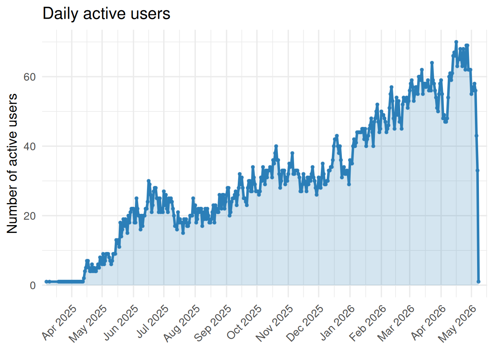
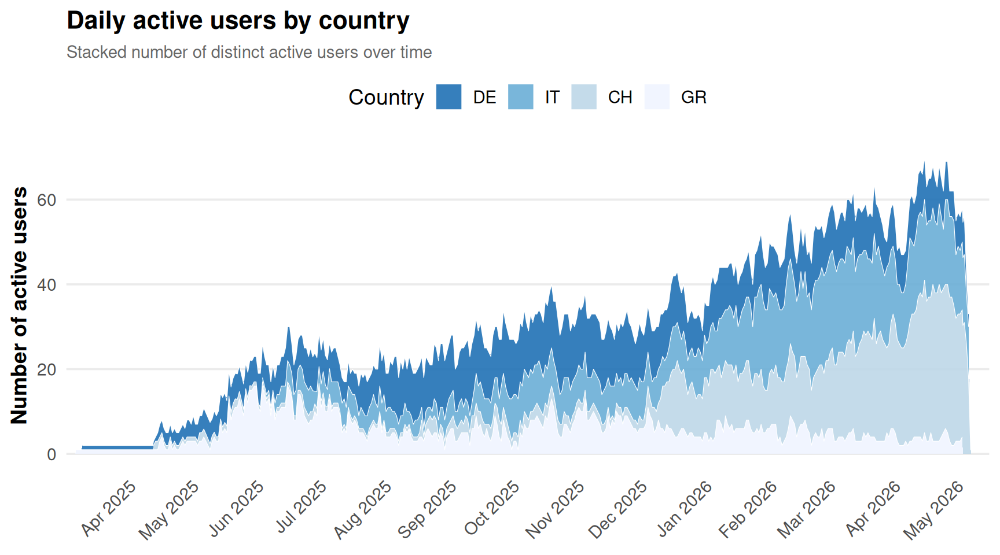
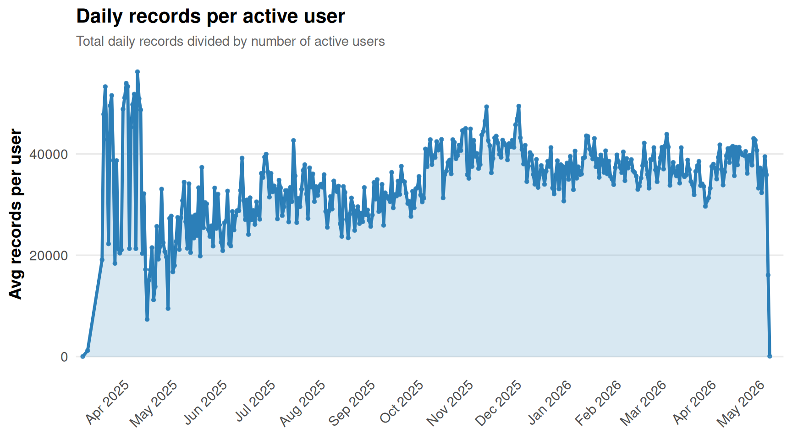
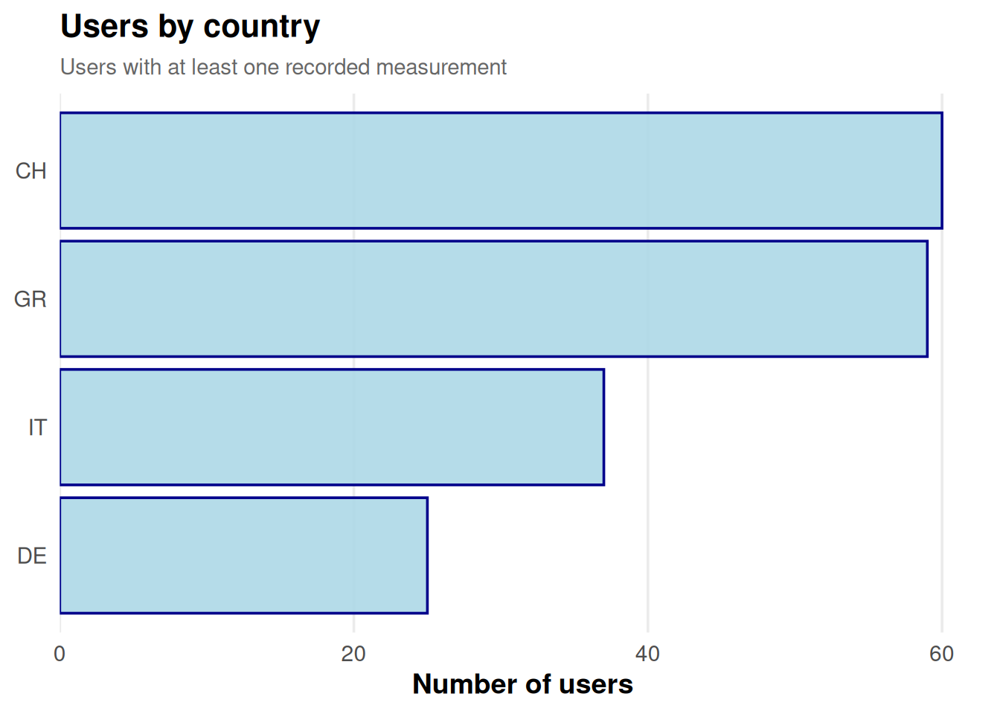
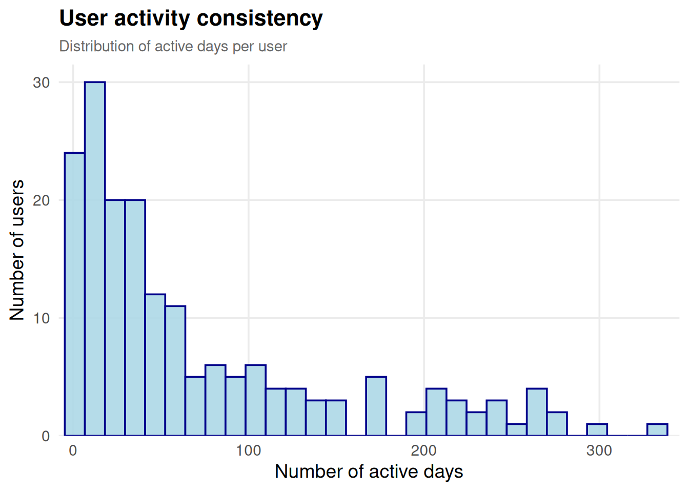
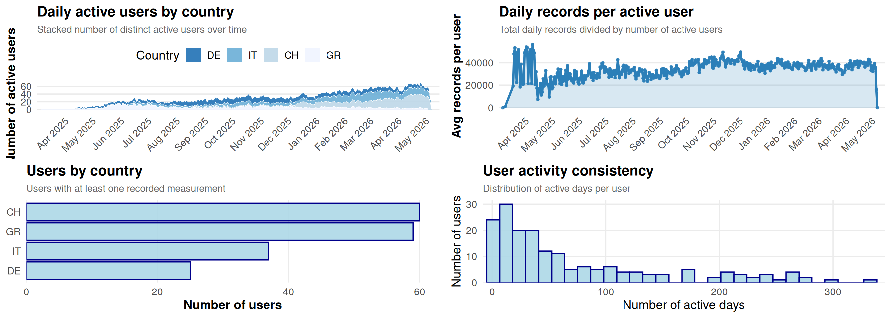

library(tidyverse)
source("../../R/load_functions.R")
triggerR <- load_trigger_functions()
rm(load_trigger_functions)
dir.create("../../outputs/user_activity", showWarnings = F)user_activity
accounts <- if (!exists("accounts")) {
triggerR$active_accounts()
} else accounts
trigger_daily <- if (!exists("trigger_daily")) {
triggerR$read_trigger_tables(granularity = "daily", cores = 5)
} else trigger_dailyp_active_users <- trigger_daily %>%
filter(!is.na(userId), source != "sleep") %>%
filter(date >= as.Date("2025-03-01"), date <= Sys.Date()) %>%
group_by(date) %>%
summarise(n_users = n_distinct(userId), .groups = "drop") %>%
ggplot(aes(date, n_users)) +
geom_area(fill = "#2C7FB8", alpha = 0.2) +
geom_line(color = "#2C7FB8", linewidth = 1.2) +
geom_point(color = "#2C7FB8", size = 1, alpha = 0.9) +
scale_x_date(date_labels = "%b %Y", date_breaks = "1 month",
expand = expansion(mult = c(0.01, 0.02))) +
labs(title = "Daily active users", x = NULL, y = "Number of active users") +
theme_minimal(base_size = 14) +
theme(axis.text.x = element_text(angle = 45, hjust = 1))
p_active_users
p_active_users_area <- trigger_daily %>%
filter(!is.na(userId), source != "sleep") %>%
filter(date >= as.Date("2025-03-01"), date <= Sys.Date()) %>%
distinct(userId, date) %>%
left_join(accounts %>% select(userId, country), by = "userId") %>%
group_by(date, country) %>%
summarise(n_users = n_distinct(userId), .groups = "drop") %>%
group_by(country) %>%
mutate(total_users_country = sum(n_users)) %>%
ungroup() %>%
mutate(country = forcats::fct_reorder(country, total_users_country, .desc = TRUE)) %>%
ggplot(aes(date, n_users, fill = country)) +
geom_area(alpha = 0.9, color = "white", linewidth = 0.2) +
scale_fill_brewer(palette = "Blues", direction = -1) +
scale_x_date(
date_labels = "%b %Y",
date_breaks = "1 month",
expand = expansion(mult = c(0.01, 0.02))
) +
labs(
x = NULL,
y = "Number of active users",
fill = "Country",
title = "Daily active users by country",
subtitle = "Stacked number of distinct active users over time"
) +
theme_minimal(base_size = 14) +
theme(
plot.title = element_text(face = "bold", size = 16),
plot.subtitle = element_text(size = 11, colour = "grey40"),
axis.title = element_text(face = "bold"),
panel.grid.minor = element_blank(),
panel.grid.major.x = element_blank(),
legend.position = "top",
axis.text.x = element_text(angle = 45, hjust = 1)
)
p_active_users_area
p_records_per_user <- trigger_daily %>%
filter(!is.na(userId), source != "sleep") %>%
filter(date >= as.Date("2025-03-01"), date <= Sys.Date()) %>%
group_by(date) %>%
summarise(
n = sum(n_records_total, na.rm = TRUE),
users = n_distinct(userId),
.groups = "drop"
) %>%
mutate(n_per_user = n / users) %>%
ggplot(aes(date, n_per_user)) +
geom_area(fill = "#2C7FB8", alpha = 0.18) +
geom_line(color = "#2C7FB8", linewidth = 1.2) +
geom_point(color = "#2C7FB8", size = 1, alpha = 0.85) +
scale_x_date(
date_labels = "%b %Y",
date_breaks = "1 month",
expand = expansion(mult = c(0.01, 0.02))
) +
labs(
x = NULL,
y = "Avg records per user",
title = "Daily records per active user",
subtitle = "Total daily records divided by number of active users"
) +
theme_minimal(base_size = 14) +
theme(
plot.title = element_text(face = "bold", size = 16),
plot.subtitle = element_text(size = 11, colour = "grey40"),
axis.title = element_text(face = "bold"),
panel.grid.minor = element_blank(),
panel.grid.major.x = element_blank(),
axis.text.x = element_text(angle = 45, hjust = 1)
)
p_records_per_user
p_users_country <- trigger_daily %>%
filter(!is.na(userId), source != "sleep") %>%
filter(date >= as.Date("2025-03-01"), date <= Sys.Date()) %>%
distinct(userId) %>%
left_join(accounts %>% select(userId, country), by = "userId") %>%
mutate(country = replace_na(country, "Unknown")) %>%
count(country, name = "n_users") %>%
arrange(desc(n_users)) %>%
mutate(country = forcats::fct_reorder(country, n_users)) %>%
ggplot(aes(x = country, y = n_users)) +
geom_col(fill = "lightblue", color = "darkblue", alpha = 0.9) +
coord_flip() +
scale_y_continuous(
expand = expansion(mult = c(0, 0.05))
) +
labs(
x = NULL,
y = "Number of users",
title = "Users by country",
subtitle = "Users with at least one recorded measurement"
) +
theme_minimal(base_size = 14) +
theme(
plot.title = element_text(face = "bold", size = 16),
plot.subtitle = element_text(size = 11, colour = "grey40"),
axis.title = element_text(face = "bold"),
panel.grid.minor = element_blank(),
panel.grid.major.y = element_blank()
)
p_users_country
p_user_days <- trigger_daily %>%
filter(!is.na(userId), source != "sleep") %>%
filter(date >= as.Date("2025-03-01"), date <= Sys.Date()) %>%
distinct(userId, date) %>%
count(userId, name = "n_days_active") %>%
ggplot(aes(n_days_active)) +
geom_histogram(bins = 30, color = "darkblue", fill = "lightblue", alpha = 0.9) +
scale_x_continuous(expand = expansion(mult = c(0.01, 0.02))) +
scale_y_continuous(expand = expansion(mult = c(0, 0.05))) +
labs(
x = "Number of active days",
y = "Number of users",
title = "User activity consistency",
subtitle = "Distribution of active days per user"
) +
theme_minimal(base_size = 14) +
theme(
plot.title = element_text(face = "bold", size = 16),
plot.subtitle = element_text(size = 11, colour = "grey40"),
panel.grid.minor = element_blank()
)
p_user_days
p_user_panel <- ggpubr::ggarrange(p_active_users_area, p_records_per_user, p_users_country, p_user_days)
p_user_panel
ggsave("../../outputs/user_activity/HF_daily_active_users.png",
plot = p_active_users, width = 7, height = 7*.618, dpi = 300)
ggsave("../../outputs/user_activity/HF_daily_active_users_aerea.png",
plot = p_active_users_area, width = 9, height = 7*.618, dpi = 300)
ggsave("../../outputs/user_activity/HF_records_per_user.png",
plot = p_records_per_user, width = 9, height = 7*.618, dpi = 300)
ggsave("../../outputs/user_activity/HF_users_country.png",
plot = p_users_country, width = 7, height = 7*.618, dpi = 300)
ggsave("../../outputs/user_activity/HF_active_user_days.png",
plot = p_user_days, width = 7, height = 7*.618, dpi = 300)
ggsave("../../outputs/user_activity/HF_user_activity_panel.png",
plot = p_user_panel, width = 14, height = 14*.618, dpi = 300)rm(list = ls(pattern = "^p_"))